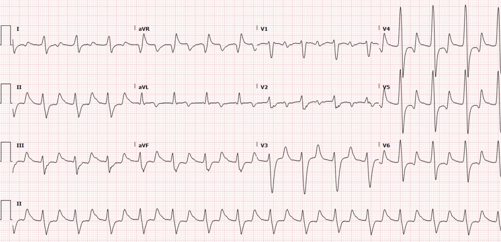
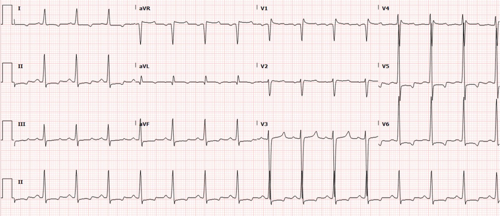
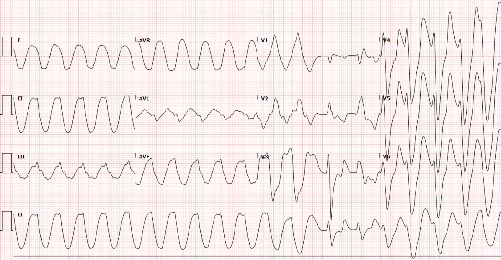
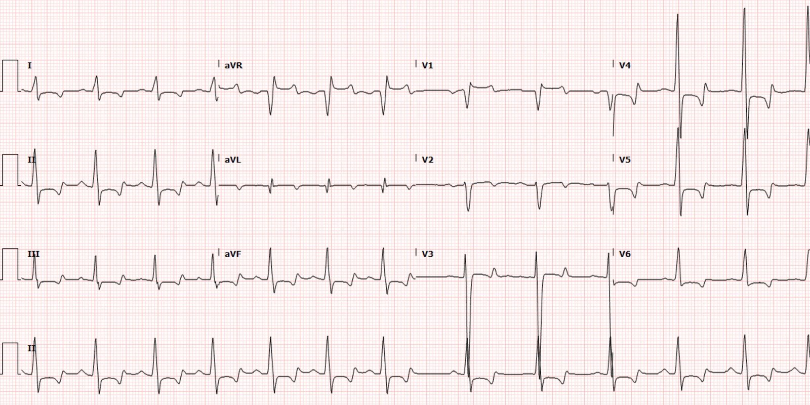
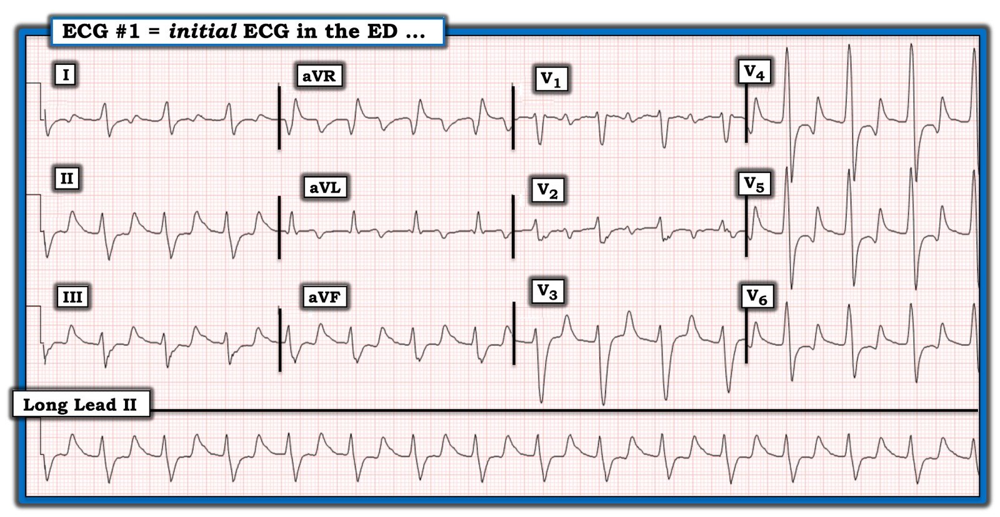
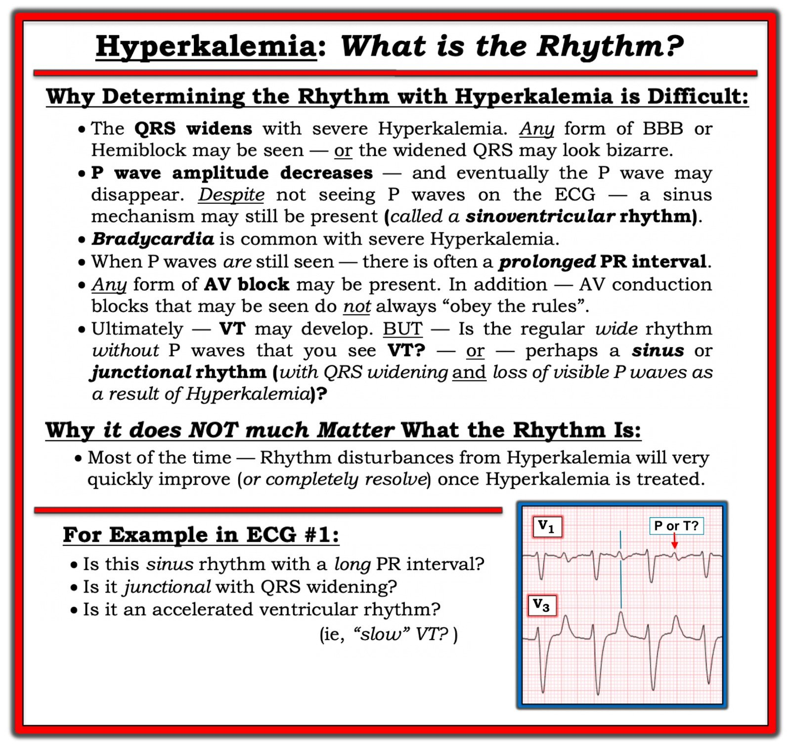
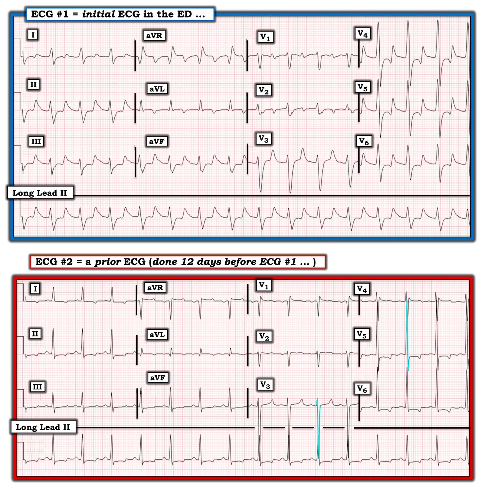

21/10/2020 — Điều gì xảy ra nếu bạn không nhận ra ngay điện tâm đồ này?
Bản dịch tiếng Việt của bài "What happens if you do not recognize this ECG instantly?" – Dr. Smith’s ECG Blog. Giữ nguyên toàn bộ 9 hình ảnh của bản gốc.
Tác giả: Pendell Meyers
Một nam thanh niên ngoài 20 tuổi có tiền sử bệnh thận giai đoạn cuối đang lọc máu, đến viện vì đau ngực cấp. Lần lọc máu gần nhất của anh cách đây 4 ngày. Anh bị tăng huyết áp rất nặng và khó thở, nhưng độ bão hòa oxy bình thường.
Điện tâm đồ lúc phân loại (triage):


Đặc hiệu chẩn đoán (pathognomonic) cho tăng kali máu nặng, đe dọa tính mạng. Thấy rõ QRS giãn rộng, khoảng PR kéo dài (tôi tin đó là sóng P, thấy rõ nhất ở V1 và V2, nhưng điều đó không quan trọng) và sóng T nhọn. Ngoài ra còn có sóng R lớn ở aVR, điển hình của tăng kali máu nặng.
Điện tâm đồ cũ trong hồ sơ, ghi cách đây 12 ngày:


Không rõ tăng kali máu có được chẩn đoán ngay từ điện tâm đồ lúc phân loại hay không.
15 phút sau, trên monitor tim có thay đổi và bệnh nhân trở nên lơ mơ:


Tôi tin đây là nhịp nhanh thất (với hình dạng sóng hình sin và QRS giãn rộng cực độ do tăng kali máu) trong hai phần ba đầu, sau đó VT ngắt và ta thoáng thấy một hoặc hai nhát dẫn truyền bình thường (bị giãn rộng do tăng kali máu), tiếp theo nhiều khả năng là VT từ một ổ khác với trước (hình dạng khác so với loạt VT trước đó).
Bệnh nhân vẫn còn tỉnh, nên được an thần bằng etomidate và sốc điện chuyển nhịp, đồng thời dùng calci, insulin, dextrose và albuterol.
Sau các biện pháp điều trị này, ghi được điện tâm đồ sau:


Kết quả kali huyết thanh trả về là 9,3 mEq/L.
Bệnh nhân được đưa đi lọc máu ngay và diễn tiến tốt.
Những điểm cần học:
Tăng kali máu nặng phải được nhận ra ngay lập tức trên điện tâm đồ.
Tử vong do tăng kali máu đôi khi biểu hiện bằng nhịp chậm/PEA/vô tâm thu, và những lúc khác bằng nhịp nhanh thất.
Không có liều calci tối đa ở một bệnh nhân như thế này. Hãy chỉnh liều cho đến khi QRS hẹp lại và sẵn sàng tiêm nhắc lại.

===================================
BÌNH LUẬN CỦA TÔI, bởi KEN GRAUER, MD (21/10/2020):
===================================
Như chúng tôi đã nhấn mạnh trong rất nhiều bài trên Dr. Smith’s ECG Blog — Tăng kali máu phải được nhận ra kịp thời! Nếu không — rối loạn này có thể tiến triển thành VT đe dọa tính mạng, như đã xảy ra trong ca hôm nay.
- “Tin tốt” — là có sẵn biện pháp điều trị tác dụng nhanh và hiệu quả cao (như Calci, Insulin & Dextrose, và Albuterol đã được dùng trong ca hôm nay và đã cứu sống bệnh nhân này).
LƯU Ý: Với hy vọng bổ sung cho các điểm lâm sàng đã được Dr. Meyers nêu ra trong phần bàn luận ở trên — tôi tập trung bình luận dưới đây vào một số Điểm Nâng cao. MỤC TIÊU của tôi là giúp hiểu sâu hơn và tạo điều kiện nhận ra nhanh (cũng như chăm sóc lâu dài) những bệnh nhân bị tăng kali máu đe dọa tính mạng.
- Trước đây tôi đã điểm lại Trình tự “Kinh điển” của các Dấu hiệu Điện tâm đồ dự kiến theo mức độ ngày càng nặng của Tăng kali máu (Để ôn lại — Xin XEM Bình luận của tôi ở cuối trang trong bài ngày 26 tháng Một năm 2020 trên Dr. Smith’s ECG Blog).
Về ca hôm nay — Dr. Meyers đã nêu bật các đặc điểm điện tâm đồ đặc hiệu chẩn đoán của Tăng kali máu đe dọa tính mạng thấy trên bản ghi thứ 1 ở trên. Những đặc điểm này gồm:
- QRS giãn rộng.
- Sóng T cao, nhọn.
- Một rối loạn nhịp …
Dù vậy — vẫn còn NHIỀU điều cần bàn về bản ghi thứ 1 trong ca hôm nay. Xin hãy XEM lại MỘT LẦN NỮA điện tâm đồ #1 — mà tôi đã in lại trong Hình 1.
- Ngoài QRS giãn rộng và sóng T nhọn — bạn còn thấy GÌ khác trên điện tâm đồ #1?
- NHỊP trong bản ghi này là gì?


Hình 1: Điện tâm đồ ban đầu trong ca hôm nay (Xem bài).
SUY NGHĨ CỦA TÔI về điện tâm đồ #1:
- Điều thường bị bỏ qua khi đánh giá Tăng kali máu trên điện tâm đồ — là sóng T có thể đảo ngược. Khi điều này xảy ra — các sóng T âm này cũng có xu hướng nhọn, tạo thành hình soi gương của sóng T dương nhọn, mảnh, đối xứng mà tất cả chúng ta đều quen thuộc. Điện tâm đồ #1 còn đi xa thêm một bước khi cho ta thấy một số sóng T hai pha — có cả thành phần âm lẫn dương nhọn trong sóng T ở các chuyển đạo V4, V5 và V6. Xin hãy nhận ra rằng các thành phần sóng T âm nhọn này ở các chuyển đạo ngực bên là một dấu hiệu điện tâm đồ phù hợp với tăng kali máu nặng.
- Hình dạng QRS khi Tăng kali máu đáng kể có thể rất đa dạng. Ta có thể thấy bất kỳ dạng blốc nhánh hay blốc phân nhánh nào — hoặc — có thể có một hình dạng QRS rất bất thường không giống bất kỳ rối loạn dẫn truyền đã biết nào. Khả năng sau chính là điều ta thấy ở Hình 1 — trong đó có một số đặc điểm tương tự chẹn kênh natri. Các đặc điểm này gồm QRS giãn rộng nhiều (tôi đo được thời gian QRS ~0,20 giây ở chuyển đạo V3!) — trục mặt phẳng trán không xác định (các phức bộ gần như đẳng điện ở 5/6 chuyển đạo chi) — R’ tận nổi bật ở chuyển đạo aVR — và — QTc kéo dài rõ rệt.
- QTc kéo dài rõ rệt thấy trên điện tâm đồ #1 gợi ý khả năng có kèm hạ calci máu (thường đi kèm tăng kali máu ở bệnh nhân suy thận). Trong ca hôm nay không có thông tin về nồng độ Ca++ huyết thanh.
Nhịp trên điện tâm đồ #1 LÀ GÌ?
Thường rất khó xác định nhịp ở bệnh nhân tăng kali máu nặng. Tôi thấy điều này đúng với điện tâm đồ #1. Một số lý do khiến việc xác định nhịp có thể khó đến vậy khi tăng kali máu nặng được liệt kê trong Hình 2.
- Tôi không nghĩ là thấy được sóng P trên điện tâm đồ #1. Thay vì là sóng P ở các chuyển đạo V1 và V2 — tôi nghĩ các sóng lệch hai pha nhỏ ở giữa khoảng R-R ở các chuyển đạo này là sóng T — vì thời điểm của chúng trùng với đỉnh của các sóng T cao ở chuyển đạo V3 và chuyển đạo II dài, là các chuyển đạo ghi đồng thời. Tôi nghi ngờ đây là nhịp xoang-thất.
- Với các dấu hiệu khác trên điện tâm đồ #1 gợi ý tăng kali máu nặng — nếu có sóng P, tôi sẽ dự đoán chúng có biên độ nhỏ hơn các sóng lệch ở giữa khoảng mà ta thấy ở các chuyển đạo V1 và V2.
- Tôi không thấy sóng P dương ở chuyển đạo II. (Nếu chỗ trát đậm nhẹ mà ta thấy trên sườn xuống của sóng T ở chuyển đạo II là do một sóng P ẩn — thì biên độ của sóng P như vậy sẽ lớn hơn mức tôi dự đoán ở một bệnh nhân tăng kali máu nặng).
- DÙ ĐÃ NÓI NHƯ TRÊN — tôi hoàn toàn thừa nhận rằng mình có thể sai khi cho rằng không thấy hoạt động nhĩ trên điện tâm đồ #1 (vì tất cả các lý do tôi nêu trong Hình 2).


Hình 2: Các lý do gây khó khăn khi xác định nhịp ở bệnh nhân tăng kali máu nặng (Xem bài).
Ta có thể học được GÌ từ điện tâm đồ cũ của bệnh nhân này?
Có rất nhiều điều ta có thể học về Tăng kali máu trong ca hôm nay khi xem lại hồi cứu điện tâm đồ #1 — so sánh với điện tâm đồ #2, là một điện tâm đồ cũ của bệnh nhân này, ghi 12 ngày trước điện tâm đồ #1 (Hình 3).
- Nắm được Bệnh sử ngắn gọn của bệnh nhân hôm nay là vô giá để diễn giải lâm sàng tối ưu các điện tâm đồ trong ca này: Chúng ta được biết bệnh nhân là một nam thanh niên ngoài 20 tuổi bị bệnh thận giai đoạn cuối, lần lọc máu gần nhất cách đây 4 ngày. Bệnh nhân đến viện vì đau ngực cấp và khó thở (với độ bão hòa O2 bình thường) — kèm tăng huyết áp rất nặng vào lúc được khám.
- VỚI Bệnh sử này — ngay cả trước khi nhìn vào điện tâm đồ #1: i) Có thể dự đoán tăng kali máu nặng, vì bệnh nhân này đã trễ lịch lọc máu ít nhất 1-2 ngày; ii) Gần như chắc chắn bệnh nhân này có LVH rõ rệt — vì bệnh thận giai đoạn cuối và huyết áp tăng rất cao vào lúc được khám; và, iii) Nhiều khả năng sẽ tìm thấy một nguyên nhân không do tim gây đau ngực cấp ở bệnh nhân này.
CÂU HỎI:
- BẠN có nghĩ K+ huyết thanh bình thường vào thời điểm ghi điện tâm đồ cũ của bệnh nhân này ( = điện tâm đồ #2) không?
- Bạn sẽ có nhận xét nào khác NỮA khi so sánh điện tâm đồ #2 với điện tâm đồ #1?


Hình 3: So sánh điện tâm đồ #1 — với một điện tâm đồ cũ của bệnh nhân này, ghi trước đó 12 ngày (Xem bài).
TRẢ LỜI (Suy nghĩ của tôi về điện tâm đồ #2):
Chúng ta không được cho biết giá trị K+ huyết thanh vào thời điểm ghi điện tâm đồ #2 — chỉ biết rằng điện tâm đồ #2 là một điện tâm đồ cũ ghi 12 ngày trước điện tâm đồ #1.
- Trên điện tâm đồ #2 có nhịp xoang ~90/phút. Cần lưu ý — sóng P dương ở chuyển đạo II, và sóng P có vẻ âm ở chuyển đạo V1. Nhưng biên độ sóng P nhỏ ở các chuyển đạo V1 và V2 của điện tâm đồ #2 — điều này ủng hộ nghi ngờ của tôi rằng các sóng lệch hai pha ở chuyển đạo V1 và V2 của điện tâm đồ #1 là quá lớn để có thể là sóng P (nhất là vì giá trị K+ huyết thanh ban đầu = 9,3 mEq/L vào thời điểm ghi điện tâm đồ #1 — và sóng P trở nên nhỏ hơn khi K+ tăng cao rõ rệt).
- Như dự đoán — điện tâm đồ cũ xác nhận LVH rõ rệt. Để dễ đánh giá kích thước các phức bộ chồng lên nhau ở các chuyển đạo ngực của điện tâm đồ #2 — tôi đã tô màu sóng S ở chuyển đạo V3 (đo được ~30 mm) và sóng R ở chuyển đạo V5 (là ~31 mm) — cho thấy biên độ QRS tăng ngoạn mục.
- Ủng hộ thêm cho chẩn đoán điện tâm đồ LVH rõ rệt trên điện tâm đồ #2 là: i) Bệnh sử (bệnh nhân bị bệnh thận giai đoạn cuối kèm tăng huyết áp nặng lúc nhập viện); và, ii) Có các bất thường ST-T ở các chuyển đạo ngực bên (tức là, các chuyển đạo V5,V6) phù hợp với “tăng gánh” thất trái. Gộp lại — 2 yếu tố này làm tăng đáng kể độ đặc hiệu đối với tình trạng lớn buồng thất trái thật sự.
- Ngoài việc QRS hết giãn rộng — HÃY LƯU Ý hình dạng QRS khác biệt thế nào giữa điện tâm đồ #1 và điện tâm đồ #2. Cụ thể: i) Có khác biệt rõ rệt về trục mặt phẳng trán giữa 2 bản ghi (tức là, trục không xác định trên điện tâm đồ #1 — trong khi trục mặt phẳng trán là +45 độ trên điện tâm đồ cũ); ii) R’ tận ở chuyển đạo aVR của điện tâm đồ #1 không thấy trên điện tâm đồ cũ; và, iii) Biên độ phức bộ QRS rất khác nhau ở một số chuyển đạo (tức là, LVH không rõ trên điện tâm đồ #1). ĐIỀU CỐT LÕI: Tôi thấy thú vị khi hình dạng QRS có thể thay đổi ngoạn mục đến thế (và khó lường đến thế) khi K+ huyết thanh tăng cực cao.
BẠN nghĩ K+ huyết thanh là bao nhiêu ở điện tâm đồ #2:
Xem lại hồ sơ của bệnh nhân này, chúng ta có được một điện tâm đồ cũ ghi trước đó 12 ngày. Nhưng chúng ta không được cho biết hoàn cảnh ghi điện tâm đồ #2 — và không được cho biết nồng độ K+ huyết thanh lúc đó. Dù vậy — tôi rất nghi ngờ rằng K+ huyết thanh ít nhất đã tăng nhẹ vào thời điểm ghi điện tâm đồ #2! Tôi nói vậy vì:
- Dù chiều cao vừa phải — sóng T ở chuyển đạo V3 của điện tâm đồ #2 nhọn một cách bất thường! Đây không phải hình dạng bình thường của sóng T ở chuyển đạo thành trước.
- Điểm thấp nhất của các sóng T đảo ngược nông ở các chuyển đạo V5 và V6 thì nhọn. Bất thường ST-T chỉ do “tăng gánh” thất trái không tạo ra hình ảnh như vậy.
- Thông thường ở một bệnh nhân có LVH rõ rệt (đến mức hiển nhiên như trên điện tâm đồ #2) — tôi sẽ dự đoán có thay đổi ST-T tương xứng của “tăng gánh” thất trái (tức là, với đoạn ST chênh xuống dốc xuống — thay vì ST dạng vòm như ta thấy ở các chuyển đạo V5 và V6 của điện tâm đồ #2). Tôi nghi ngờ lý do của hình ảnh “tăng gánh” không như dự đoán này ở các chuyển đạo ngực bên của điện tâm đồ #2 — là đoạn ST chênh xuống dốc xuống, mà có lẽ đã được thấy nếu K+ huyết thanh bình thường, đã bị làm giảm bớt bởi các thay đổi sóng T do nồng độ K+ huyết thanh ít nhất đã tăng nhẹ vào thời điểm ghi điện tâm đồ cũ này.
ĐIỂM THEN CHỐT (PEARL) #1: Hãy nhớ rằng hình ảnh ST-T thấy trên điện tâm đồ khi có tăng kali máu nặng là kết quả tổng hợp của các thay đổi ST-T gây ra bởi K+ huyết thanh tăng — chồng lên hình ảnh ST-T vốn có trước khi K+ huyết thanh tăng!
- Do đó — đánh giá thiếu máu cục bộ qua các thay đổi ST-T trên điện tâm đồ #1 là không thể, vì bản ghi này được ghi vào lúc K+ huyết thanh = 9,3 mEq/L. Theo kinh nghiệm của tôi — bạn không bao giờ biết ST-T sẽ trông như thế nào cho đến khi K+ huyết thanh được điều chỉnh hoàn toàn và điện tâm đồ được ghi lại.
ĐIỂM THEN CHỐT (PEARL) #2: Ý nghĩa của Pearl #1 là, mặc dù trình tự “kinh điển” của các dấu hiệu điện tâm đồ khi nồng độ K+ huyết thanh tăng dần không được tuân theo nghiêm ngặt ở mọi bệnh nhân — ở từng bệnh nhân cụ thể, trình tự xuất hiện các dấu hiệu điện tâm đồ mà tôi minh họa trong bài ngày 26 tháng Một năm 2020 của chúng tôi có xu hướng nhất quán một cách đáng ngạc nhiên (theo kinh nghiệm của tôi) trong suốt thời gian nằm viện của bệnh nhân đó.
- Tôi nghi ngờ bệnh nhân trong ca hôm nay là người thường xuyên đến khoa cấp cứu (ED). Tôi nói vậy vì nam thanh niên này bị bệnh thận giai đoạn cuối với LVH rất rõ — anh đến viện với tăng kali máu đe dọa tính mạng (có lẽ là hậu quả của việc trễ lần lọc máu gần nhất) — và, điện tâm đồ cũ của anh chỉ mới 12 ngày trước đó cũng cho thấy các dấu hiệu tăng kali máu kín đáo-nhưng-có-thật vào thời điểm đó.
- Tôi nói từ kinh nghiệm đọc toàn bộ điện tâm đồ của 35 người hành nghề y trong suốt 30 năm, bao gồm nhiều đợt làm bác sĩ điều trị chính tại bệnh viện. Nhờ vậy — tôi đã biết nhiều bệnh nhân phòng khám của chúng tôi qua điện tâm đồ của họ. Kết quả là — đôi khi tôi có thể biết ngay ở một số bệnh nhân qua điện tâm đồ của họ (mà không cần lấy máu xét nghiệm trước) liệu nồng độ K+ huyết thanh của họ có đang tăng trở lại hay không.
- Thông điệp cần nhớ — NẾU tôi là người hành nghề y chịu trách nhiệm chăm sóc bệnh nhân hôm nay — biết được nồng độ K+ huyết thanh vào thời điểm ghi điện tâm đồ #2 sẽ rất có ích. Biết điều này sẽ giúp tôi trong việc nhận ra sớm hơn, ở những lần tái khám, khi nào tăng kali máu đang quay trở lại.